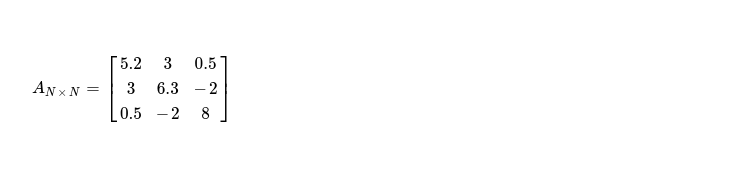

This week I decided to take a look at another matrix decomposition method i.e. Cholesky Factorization, which is useful when working with symmetric positive definite matrices. It helps in splitting AN x N into LN x N, UN x N such that 👇
My interest is in implementing it targeting accelerators i.e. OpenCL enabled CPUs and GPGPUs. I'd like to start with how this factorization works and then move to its SIMT implementation technique. While explaining, I'll factorize 👇 symmetric positive definite matrix by hand.
>>> import numpy as np
>>> a = np.array([[5.2, 3, 0.5], [3, 6.3, -2], [0.5, -2, 8]]); a
array([[ 5.2, 3. , 0.5],
[ 3. , 6.3, -2. ],
[ 0.5, -2. , 8. ]])
>>> np.all(np.linalg.eigvals(a) > 0) and np.all(a == np.transpose(a)) ✅
True

After this factorization I'd like to produce one upper triangular matrix, so I've to iterate over all pivots of matrix A
in-order and process elements along row of current selected pivot. After N iterations, I must get desired result. I start with pivot
A0, 0, then after this iteration I should get row A0, _ in desired form --- that's how it should be
in final UN x N.
First step is updating pivot while performing some arithmetics with elements living in same column above pivot A0, 0.
As there's no element above selected pivot, I just move to second step. I can programmatically represent first step as 👇.
// step one
N = 3
k = 0
sum = 0.
for i in range(0, k):
sum += a[i][k] ** 2.
a[k][k] -= sum // updated pivot
In second step, I've to update pivot with square root of it. This produces 👇 updated matrix, which is to be operated on during step three, due to computational dependency.
// step two
a[k][k] = a[k][k] ** .5
In final step of first iteration, I'd like to update remaining elements in first row, as pivot is already in shape. I programmatically show what needs to be done.
// step three
for i in range(k + 1, N):
sum = 0.
for j in range(0, k):
sum += a[j][k] * a[j][i]
a[k][i] -= sum
a[k][i] /= a[k][k]
After step three, I obtain matrix with updated non-pivot columns of first row, which looks like 👇.
It's time to move to next pivot i.e. sitting at A1, 1. Applying step one of algorithm, I get following matrix with pivot cell updated to 👇. Blue marked cell, just above selected pivot, is what accessed during pivot updation.
Step two is easy, producing following matrix, while only updating selected pivot.
During last step, I update only single cell i.e. non-pivot column in second row with column index > k. Following snippet depicts what I do.
k = 1 // pivot column
i = 2 // selected non-pivot column
/* j = row identifier above selected pivot */
sum = a[j][1] * a[j][2], where j = [0, k) // selected columns 1 (pivot), 2 (non-pivot)
It produces updated matrix as below, with upper triangular portion of first two rows as supposed to be in factorized matrix.
In final iteration where I work on pivot A2, 2 just first two steps are what required. As no non-pivot column with column index > (k = 2) exists, I'm skipping last step. During first step, two cells above selected pivot, in same column, are accessed for computing updated pivot. Finally step two follows.
This way I get upper triangular matrix from factorization, transposing same gives me lower triangular one. Multiplication of them ensures Cholesky Factorization worked as expected !
Before I start with SIMT implementation of Cholesky Factorization, I'd like to mention about an algorithm for producing symmetric positive definite matrix, which is required here. Let me start with a random matrix.
// generating symmetric positive definite matrix
>>> a = np.random.random((3, 3)); a
array([[0.67869109, 0.19194503, 0.76081322],
[0.53779097, 0.38546904, 0.19214424],
[0.0920523 , 0.30155419, 0.39195979]])
>>> b = np.transpose(a)
>>> c = a + b; c
array([[1.35738219, 0.729736 , 0.85286552],
[0.729736 , 0.77093808, 0.49369843],
[0.85286552, 0.49369843, 0.78391958]])
>>> d = c * .5; d
array([[0.67869109, 0.364868 , 0.42643276],
[0.364868 , 0.38546904, 0.24684922],
[0.42643276, 0.24684922, 0.39195979]])
>>> e = np.diag((1, 1, 1)); m = d + e; m
array([[1.67869109, 0.364868 , 0.42643276],
[0.364868 , 1.38546904, 0.24684922],
[0.42643276, 0.24684922, 1.39195979]])
>>> np.all(np.linalg.eigvals(m) > 0) // ensures `m` is positive definite matrix
>>> np.all(np.tranpose(m) == m) // ensuring `m` is symmetric
Reviewing whole flow of factorization makes it easy to figure out how to parallelize portions of algorithm without introducing any data race. I put following data dependency diagram for making it more clear.

For a matrix of dimension N x N, I've to go through N steps of execution in-order, where during each iteration I schedule three kernels for computing above main diagonal cells along selected row ( i.e. pivot row ) of final upper triangular matrix. I implement parallel cholesky factorization in SYCL DPC++ & run it on multiple hardwares.
$ dpcpp -fsycl cholesky_factorization.cpp && ./a.out 🥉
running on Intel(R) UHD Graphics P630 [0x3e96]
random symmetric positive definite matrix generated, in 155 ms
cholesky factorization, in 1302 ms | max deviation 0.00476074 😔
/* ----- */
$ dpcpp -fsycl cholesky_factorization.cpp && ./a.out 🥈
running on Intel(R) Xeon(R) CPU E5-2686 v4 @ 2.30GHz
random symmetric positive definite matrix generated, in 302 ms
cholesky factorization, in 400 ms | max deviation 0.00463867 (•_•)
/* ----- */
$ dpcpp -fsycl cholesky_factorization.cpp && ./a.out 🥇
running on Intel(R) Xeon(R) Gold 6128 CPU @ 3.40GHz
random symmetric positive definite matrix generated, in 176 ms
cholesky factorization, in 221 ms | max deviation 0.00512695 🌟
I see performance is not impressive and I've some ideas how it can be improved. In current implementation,
scope of parallelism is not well respected. In each iteration when a pivot is selected and cells on same row are computed, only
a subset of elements are accessed, not requiring me to make whole matrix available to compute unit. Currently usage of conditional
statements in kernel body produces divergent control flow, reducing achievable parallelism. In coming days, I'd like
to improve Cholesky Factorization implementation while keeping aforementioned points in mind.
I keep current implementation here for future reference.
Have a great time !